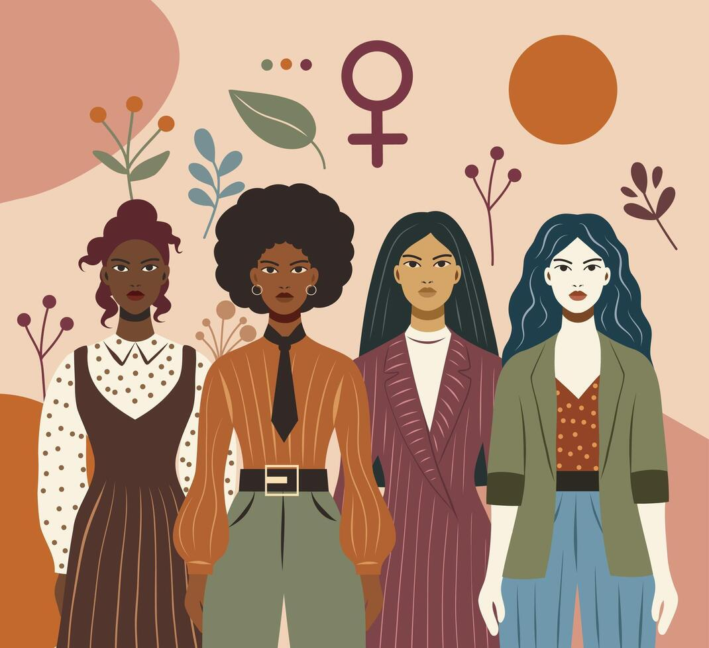

Strong & Smart: Essential Life Advice
Hey beautiful! 🌸
Growing into a confident and independent woman isn’t about being perfect, it’s about making informed choices, setting boundaries, and valuing yourself. Life comes with challenges, but having the right mindset and habits can make all the difference. Here are five powerful areas every girl should focus on.
1. Know Your Worth
Never base your value on others’ opinions, attention, or validation. Your confidence should come from within your skills, character, and self respect. When you know your worth, you naturally attract better opportunities and relationships.
2. Set Clear Boundaries
It’s important to say “no” when something doesn’t feel right. Whether it’s friendships, relationships, or work, setting boundaries protects your time, energy, and mental well being.
3. Focus on Education & Independence
No matter what path you choose, education and financial independence give you freedom and security. Always aim to build skills and knowledge that support your future.
4. Take Care of Your Physical & Mental Health
Your health is your foundation. Prioritize rest, nutrition, movement, and mental well being. Don’t ignore stress or burnout taking care of yourself is not a luxury, it’s necessary. Your well being matters.
5. Choose Your Circle Wisely
The people around you influence your mindset and growth. Surround yourself with those who support, uplift, and respect you, not those who drain or limit you.